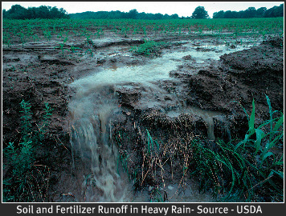

Home
Introduction
Fossil Fules
Clearing Forest
Fertilization
Global Warming
Conclusion
In the last half 20th century, the use of chemical fertilizers has risen dramatically. The high rate of application of nitrogen rich fertilizers has effects on the heat storage of cropland and the runoff of excess fertilizers creates dead zones in the oceans. In addition to these effects, high nitrate levels in groundwater is due to over fertilization and that is a concern for human health. The U.S. food system contributes nearly 20 percent of the nation’s carbon dioxide emissions on a global scale, figures from the Intergovernmental Panel on Climate Change say that agriculture land use contributes 12 percent of global greenhouse gas emissions. If we consider some of the embodied energy required for industrial, it gets worse. According to Will Allen, green farmer extraordinaire, including all the manufacture and the use of pesticides and fertilizers, fuel and oil for the tractors, equipment, trucking and shipping, electricity for lighting, cooling, and heating, and emissions of carbon dioxide, methane, and other greenhouse gases bumps the impact up to between 25 and 30 percent of the U.S.’s collective carbon footprint.
